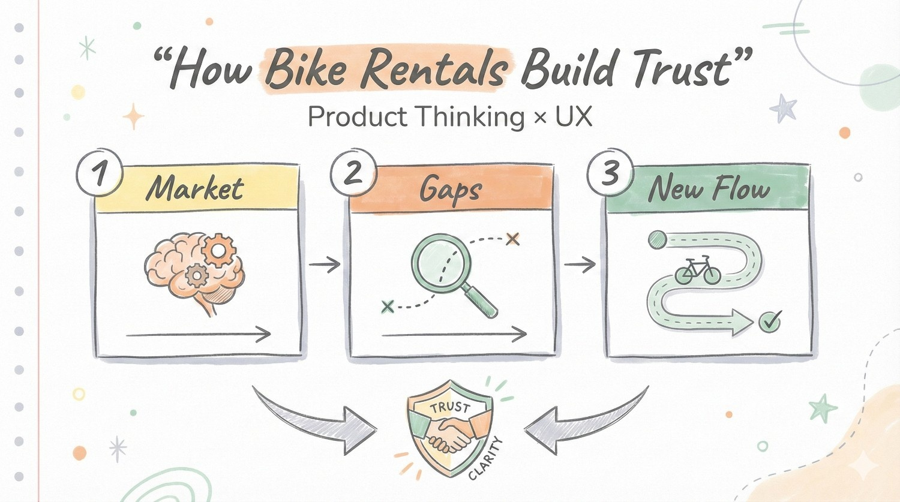

Projects

Freedo – Designing Trust in Bike Rentals
A structured product deep dive into Freedo’s booking experience, focused on one core question: how can bike rentals in India feel predictable, transparent, and stress free? This case study analyzes renter psychology, marketplace trust gaps, and friction points across the discovery to payment journey.
It combines user journey thinking, UX redesign explorations in Figma, and business level strategy mapping to connect interface decisions with long term growth. The project reimagines Freedo not just as a rental platform, but as a trusted mobility layer built on clarity, reassurance, and repeat behavior.
View Case StudyArattai – Hyperlocal Community Feature
A concept feature designed for Arattai that enables people to connect through hyperlocal groups and broadcasts based on their location. The goal was to help users discover community updates, local news, safety alerts, and neighborhood discussions. All within their immediate surroundings. This feature reimagines messaging as a community-first experience rather than just personal communication.
I designed the complete UI and UX flow of this feature in Figma, focusing on simplicity, familiarity, and contextual relevance. The case study includes a YouTube video where I explain the thinking behind the design, and a detailed Figma whiteboard that breaks down the structure, use cases, and value to both users and the platform.
View Project
Uber – Redefining Urban Mobility
A deep dive into how Uber revolutionized transportation, from its origins in 2009 as a luxury black-car app to becoming a global marketplace for mobility. Uber's multifaceted business strategy, pricing dynamics, driver incentives, and network effects that drove exponential growth are all examined in this case study.
Additionally, it dissects the psychological design tenets of Uber's user experience, including the sense of control, instant gratification, social proof, and dynamic feedback loops that give users the impression that they are always "moving." Lastly, it looks at Uber's long-term plan to control attention by leveraging delivery and daily mobility ecosystems.
View Case Study
Realans AI – The Truth Layer for AI Answers
Realans AI is a concept tool I designed to solve a growing problem in AI usage, inconsistent and unreliable answers from different models. The system sends a single query to multiple top AI models simultaneously, compares their responses, and then revalidates the answers by asking each model to judge the correctness of the others. When two or more models agree, that consensus answer is displayed as the final output.
The product is designed for users who need instant, accurate answers, such as students during online tests or professionals verifying quick facts. I created the complete UI and UX in Figma, focusing on clarity, speed, and confidence in results. The interface visually shows how answers are processed, compared, and verified, helping users trust the response they receive.
View Project
AI Flipbook Maker – Smarter Digital Publishing
The AI Flipbook Maker is a tool I designed to convert unstructured PDFs into clean, web-hosted flipbooks that look great on both desktop and mobile. It uses AI to organize and enhance content automatically, creating a professional, readable layout with minimal effort.
The interface replaces complex editing tools with a simple, guided setup so anyone can create an ebook in minutes. Each flipbook is hosted online, allowing businesses to capture leads through user logins and track engagement seamlessly.
View Project